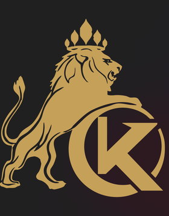

Resume
个人简历
电商操盘 × 团队体系 × AI 技能包工程 —— 能用数字对账的落地者。

戴程鹏
电商操盘手 · 团队体系搭建 · AI 技能包工程负责人
📍 深圳 / 南京 ✉️ alextok200@hotmail.com GitHub: github.com/alextok200
集团电商负责人：管理 15 人 6 岗团队与 49 家店铺矩阵，国内 9+ 平台与海外多平台双线推进， 推动业务结构向国内海外 50/50 调整。另一条主线是把运营知识工程化——沉淀为 20+ 可复用的 AI 技能包（投流、视觉、看板、审批自动化、内容生产），让零基础同事一键使用。
49店铺矩阵
15团队规模 · 6 岗
20+AI 技能包
9+国内平台
5亚马逊站点类目榜
工作经历
2026.06 - Present
万世康伦（KONLLEN）集团 · 南京万世康伦体育用品有限公司 · 电商运营负责人
- 搭建并管理电商团队：15 人、6 岗体系，配套岗位说明书与绩效考核标准
- 49 家店铺矩阵：覆盖国内 9+ 平台与海外多平台，推动国内外业务向 50/50 调整
- 主打品牌进入亚马逊 5 站类目榜（日本 #5 / 德国 #8 / 美国 #11 / 加拿大 #11）
- 主导数据中台 / 财务 Agent / 审批自动化等工程化项目，用工具沉淀运营能力
2018.10 - 2025.10 · 7 年
北京亚辰科技服务（领星分公司）· 分公司 / 财务负责人
- 为领星跨境 ERP 提供财务与合规服务，管理 5 人团队，2018.10 - 2025.10 共 7 年
- 推动 FBA 库存与跨境财务标准化、月度复盘、KPI 同步、AI Skill 早期开发
- 沉淀 IFC 0-1 流程设计与零基础可读 SOP 能力，为后续电商与技能包主线打底
跨年度独立主线
AI 技能包工程体系 · 跨年度独立主线
- 20+ 可复用技能包：投流计划与审核、视觉生产、数据看板、OA 审批、视频脚本等
- 流水线化交付：分层开发 → 独立审计 → 版本化打包 → 按阶段回滚
- 通用母版 + 业务分支双轨，既跨项目复用，又隔离业务敏感逻辑
2002 - 2018
多平台电商操盘积累 · 2002 - 2018
- 国内兴趣电商 + 货架电商 + 跨境出海，从单店运营到多店铺矩阵
- 经营数据中台：国内 ERP + 跨境财务双源，统一口径辅助决策
核心能力
电商操盘（国内 + 跨境）
团队体系与绩效搭建
AI 技能包工程
数据中台（Flask · ECharts · SQLite）
ERP 数据对接
投放计划与审核
视觉与内容生产管线
流程自动化（审批 · 看板推送）
双语运营（中 / 英）
教育背景
金陵科技学院
大专 · 海关与国际物流
华南理工大学（继教学院）
本科 · 计算机网络信息管理
证书 · 驾照
C1 驾照
计算机二级
v1.7.2 已同步双语简历 v1.0.0：补全工作年限 27 年、前司时间线 2018.10 - 2025.10、学历与证书字段；邮箱显示已对齐公开联系邮箱（表单转发仍走站内邮箱）。